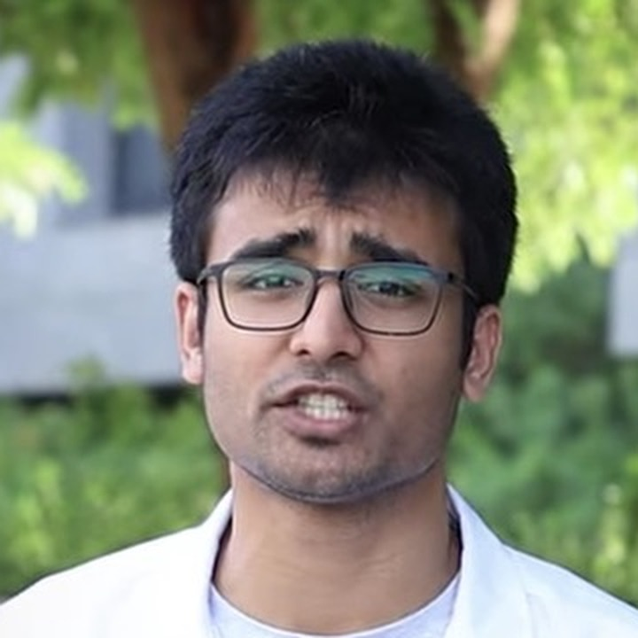

Before I Leave Medical College · 002Article 002
Before I leave medical college, I want to tell you about Quintubate.
A video-laryngoscope costs lakhs. A doctor’s idea brings it to thousands.

Dr. Sidharth Narayanan
House Surgeon, GMC Kozhikode

Dr. Maanas Jain
Founder and CTO, Quintubate
Before I Leave Medical College · 002The premise
MBBS is the foundation of every doctor’s career. Right now, it feels undervalued.
This series is about bringing that value back, and about what the foundation can lead to.
So I asked someone who built on it.
Next: People of Healthcare →
People of HealthcareMeet
People of Healthcare
I am connecting with 50 healthcare and MedTech leaders and builders before 2026 ends. This is one of them.
Dr. Maanas Jain
Founder and CTO, Quintubate Pvt. Ltd.
MBBS, AIIMS Jodhpur
Internal Medicine, Rutgers University, USA
Before starting residency, he set out to build Quintubate.
Sources: Dr. Jain’s Instagram profile (@quintubate); his answers to People of Healthcare.
People of HealthcareThe gap
A laryngoscope costs ₹1,000 to 2,000. A video-laryngoscope costs lakhs.

Source: figures as shown in Dr. Jain’s own video: ₹2,00,000 to ₹3,00,000 for a video-laryngoscope.
People of HealthcareUVEAL
UVEAL turns the laryngoscope a hospital already has into a video-laryngoscope.

A real intubation with UVEAL at Civil Hospital, Gandhinagar (Dr. Jain’s video). The company states the device is CDSCO certified. Dr. Jain says 250+ doctors across India and 12 other countries use UVEAL.
People of HealthcareIn his words
What are you building, and what do you want the world to know?
“Quintubate is an initiative focussed on democratizing access to high-tech, expensive medical devices… at a sustainable cost for Indian healthcare.”
“UVEAL brings down the cost of videolaryngoscopy from the lakhs to the thousands. In a span of 6 months since commercialization, UVEAL is being used by 250+ doctors across India and 12 other countries.”
People of HealthcareThe bottleneck
What are the bottlenecks you face?
“The medical device ecosystem is largely limited to a select few companies, all based internationally, and hence healthcare in India is not supportive of made-in-India devices. Clinicians are not aware, and are skeptical of Indian medical device startups.”
People of HealthcareThe bridges
What bridges need to be built, and how do we increase adoption?
“There needs to be an ecosystem for hospitals to learn about new licensed products developed by medical device startups as well as an incentive to adopt such indigenously designed devices. Regulators and medical colleges need to be on the lookout and supportive.”
“Fostering dialogue between medical device startups and existing hospitals would greatly enhance the chances of adoption.”
People of HealthcareThe future
How do you see the future of healthcare, and what needs to be done?
“If Indian [doctors and hospitals] do not push for development and adoption of indigenous devices, medical device innovation in India will inevitably stagnate.”
“There is a big opportunity. Since very few medical devices are actually made in India, there is a huge scope for founders to pitch in and innovate to fill that large gap.”
People of HealthcareWhat he needs
What he needs right now.
Meetings with hospitals and administrators, to explain the device and how it can be procured.
Access to grants for new prototype development.
Introductions to hospital administrators and government healthcare officials.
People of HealthcareWhy this matters
A doctor sees a problem at the bedside. What happens next depends on whether anyone makes room for the solution.
MBBS is where doctors learn to see what needs fixing. The next step needs hospitals willing to look, grants, and a culture that adopts what is built here.

The conversation with Dr. Jain.
People of HealthcareYour turn
Some doctors don’t wait. They build.
Do you know a hospital administrator who should meet Dr. Jain?
People of Healthcare
medinn.in/people-of-healthcare
The series
medinn.in/before-i-leave-medical-college